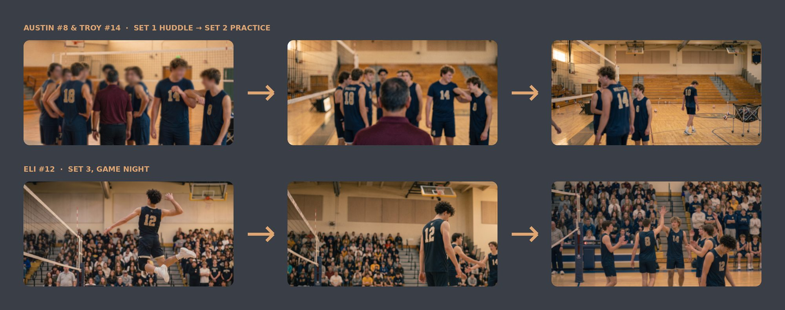
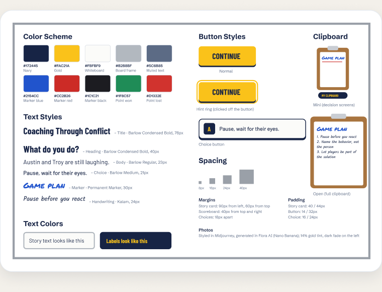
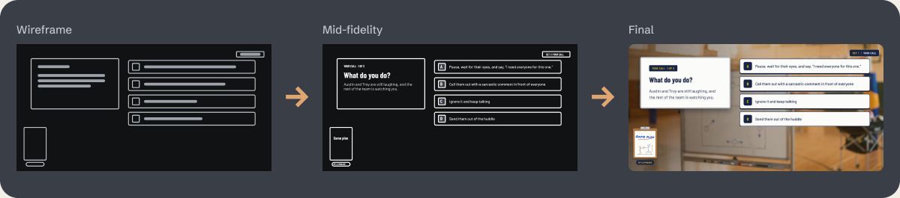

01 / The team, read it like a roster
The team I built, and who does what.
I coach; the rest runs on its own, and nothing leaves without a check. The court below is the same system, drawn the way I'd teach it: one metaphor, labeled positions, and a clear line between what runs by itself and what waits for my call.
Tshwjxeeb Vaaj Head coach
Sets the direction, makes the judgment calls, and signs off on anything that goes out.
Claude Assistant coach
Takes each task, runs the right playbook, and drafts, builds and checks so I can focus on decisions.
The Morning Scouts
Scheduled tasksRuns that go out before I wake up, like my weekday roundup of new learning design roles, and report back.
The Line Judge
Quality checkA reusable checklist every draft passes: my real facts, no invented numbers, my voice and my style guide.
The Playbook
Memory & standardsOne place for my background, decisions, style guides and project details, so nothing gets decided twice.
The Timeout Whistle Stop switch
One pause stops every scheduled run at once. I'm the one who blows it.
02 / The overview
The idea isn't the bottleneck. Everything around it is.
Good scenario design is slow, and the idea is rarely the hard part. The time goes to everything around it: turning lived experience into clear behaviors, drafting branches, making dozens of consistent images, catching mismatches across screens, and keeping the case study up to date. Done by hand, that work crowds out the judgment calls that decide whether a scenario actually lands for a learner.
03 / The pipeline
A repeatable pipeline, not one prompt at a time.
Instead of asking AI one question at a time, I run every project through the same stages. Each stage hands its output to the next, and I make the call at every gate.
“AI does the legwork. I make the calls.”
- 01Real story
- 02Action map
- 03Storyboard
- 04Visuals
- 05Prototype
- 06Check
- 07Case study
04 / In practice
Where the pipeline shows up in real work.
AI image pipeline
I set the look in Midjourney, then generate scenes in Flora AI with Nano Banana, keeping the same players, uniforms and gym consistent across all three sets of Coaching Through Conflict.
Action maps & storyboards
Claude helps me draft action maps and storyboard tables from my own experience. I decide which behaviors matter and what every screen says.
One source of truth
My background, project facts and style guides live in one place, so every draft is checked against the same record.
Branching prototypes in Figma
68 connected screens with prototype links, variables that remember a learner's guess, overlays and Smart Animate.
Vibe-coded builds
Pip's Number Garden, the TV Wall Sales Simulator and this website were built by describing what I wanted and refining the code with AI.
Morning roundup
A scheduled task searches new learning design roles every weekday morning and sends me the best matches before I start my day.
05 / The rules
Six rules I hold every project to.
No invented numbers
Every claim is checked against my real facts. If I haven't measured it, it doesn't go on the page.
Nothing ships without a playthrough
I walk every branch as a learner would before calling a module done, and fix what feels off.
Real people stay protected
Jersey numbers stand in for student-athletes, AI scenes use no real faces from my teams, and images carry no brand logos.
It runs without me, and reports
Scheduled tasks do the routine searching and send a short summary, so nothing waits for me to remember it.
The style guide is the standard
Colors, type, buttons and spacing come from one style guide, so every screen matches without guesswork.
Accessibility is part of done
Readable sizes, alt text and a reduced-motion setting are built in from the start, not added at the end.
06 / The principle
Human judgment leads. AI does the legwork.
AI doesn't decide what's true, what's fair to a learner, or how a moment should feel. It speeds up the busywork so I can spend my time on the parts only a designer should own. I'm open about where AI helps, because being clear about that line is part of designing responsibly.
07 / Why it matters
The question every hiring team is asking.
Hiring teams keep asking how people actually use AI in learning design, beyond a chatbot. This is my answer in practice. I built my first training module with no formal instructional design training by learning these tools as I went, and every project and visual on this site came out of this pipeline.
08 / Inside the system

AI image pipeline
The same players across practice and game night, styled in Midjourney and generated in Flora AI with Nano Banana.

Style guide: one standard for every screen
Colors, type, buttons, spacing and the clipboard, defined once and used across all 68 screens.

From wireframe to final
Grey boxes first, then the real script, then the finished scene, so layout decisions happen before visuals.
09 / See it in action
The flagship this system produced: Coaching Through Conflict.
A scenario-based simulation for new head coaches, built from my own 0–10 to semifinal season with this pipeline.
Let's talk.
Hiring for a learning design role, or curious how something on this site was built? I'd love to hear from you.